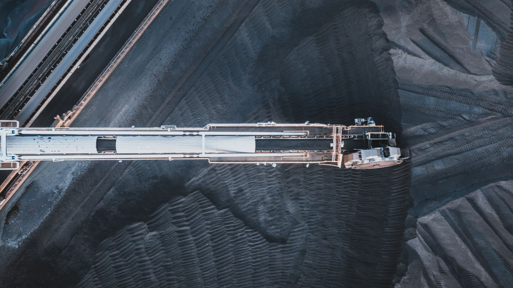

아프리카 광물 금융, 현지 가공에 무게

[자료사진] 기사와 무관한 이미지입니다.
- 최대 3억 유로 금융으로 현지 산업화 지원
- 에너지·운송 등 기반시설도 지원 대상
- 개별 사업과 대출 배분은 아직 미공개
광산에서 가공시설까지 넓어진 금융
11월 27일 mining.com 보도에 따르면 유럽투자은행(EIB)과 남아프리카공화국 산업개발공사(IDC)가 아프리카 핵심광물 사업에 최대 3억 유로를 공동 공급하기로 했다. EIB는 이 금융이 연계 투자를 포함해 약 9억 유로 규모의 전체 투자를 뒷받침할 것으로 기대했다. 3억 유로는 금융 제공 한도이며, 9억 유로가 이미 확보됐다는 뜻은 아니다.
지원 범위는 채굴에 그치지 않는다. 광물 가공과 정련, 재활용, 대체 소재를 비롯해 사업에 필요한 에너지·운송·디지털 기반시설까지 포함한다. 광산이나 공장 내부 설비만으로 해결하기 어려운 전력과 물류 문제도 금융 대상으로 삼은 것이다. 원료 확보와 현지 제조업 육성을 함께 추진한다는 점이 이번 협약의 특징이다.
대상 지역은 남아공과 사하라 이남 아프리카다. 사업은 현지 산업 발전에 기여하면서 유럽의 생산·공급 체계와 명확한 연결성을 보여야 한다. 국제 환경·사회 기준도 충족해야 한다. 다만 지원받을 기업이나 개별 대출 배분은 발표되지 않아, 실제 투자가 어느 광종과 공정에 집중될지는 아직 알 수 없다.
원료 수출국이 가공 단계로 이동하는 배경
이번 금융은 남아공이 2025년 마련한 핵심광물 전략과 맞물린다. 남아공은 광산 가까이에서 가공을 늘리고, 전력과 기반시설에 투자해 광물 생산에서 발생하는 부가가치를 국내 제조업으로 연결하려 한다. 유럽에는 공급처 다변화가, 아프리카에는 공장과 일자리 확대가 각각 사업의 명분이 되는 구조다.
망간에서는 원료 수출국의 가공 확대 움직임이 구체적인 일정으로 나타나고 있다. 11월 28일 mining.com 기고문에 따르면 가봉은 2025년 12월 공포한 법령을 통해 2029년 1월부터 망간 원광 수출을 금지하기로 했다. 가나는 2028년 말까지 망간과 보크사이트의 최소 절반을 국내에서 처리하고, 2030년 말까지 두 광물의 원광 수출을 금지한다는 계획을 밝혔다.
망간은 철강용 합금 생산으로 이어지는 원료다. 기고문에 따르면 2025년 인도의 망간 광석·정광 수입 중 남아공과 가봉의 비중은 중량 기준 97%였다. 인도는 같은 해 실리코망간 125만 톤을 수출했다. 원료 공급국이 합금까지 만들면 기존 고객과 가공제품 시장에서 경쟁하는 관계로 바뀔 수 있다.
가공 확대도 공정에 따라 효과가 다르다
현지 가공이라는 표현이 모두 같은 산업 변화를 뜻하지는 않는다. 가봉은 모안다에서 합금 공장을 운영하고 있으며, 프랑스 에라메트와의 협약에 따른 더 큰 해안 공장은 2031년 가동 가능성이 제시됐다. 반면 가나의 제안된 처리시설은 광석의 망간 함량을 약 27%에서 40%로 높이는 것이 주요 목표다.
가나가 품위를 높인 원료를 계속 중국 가공시설로 보낸다면 거래 관계의 큰 틀은 유지될 수 있다. 가봉이 직접 합금을 생산해 수출하면 기존 합금 생산국과 경쟁할 여지가 커진다. 채굴, 원료의 품위 향상, 제련은 서로 다른 단계이며, 설비에 투입되는 자금이 어느 단계까지 연결되는지가 공급망 변화의 폭을 가른다.
전력 확보도 별도 과제다. 기고문은 남아공이 자국 광석을 수입한 인도에서 실리코망간을 다시 사들인 배경으로 전력난을 짚었다. 가봉의 에라메트 관련 합금 공장 구상에서도 전력 공급에 관한 의향서가 체결됐다. 광물 매장량이나 수출 제한만으로 가공시설의 안정적인 운영까지 보장되지는 않는다는 사례다.
유럽과의 연결은 기회이자 조건
유럽의 통상 조건도 현지 공장의 사업성에 영향을 준다. 해당 기고문에 따르면 EU의 합금철 세이프가드 아래에서 인도산 실리코망간은 할당량을 넘는 저가 수입에 추가 관세가 적용되지만 가봉산은 면제된다. 그러나 이 조치의 예정 종료일은 가봉의 원광 수출 금지 시행보다 앞선다. 현재의 통상상 이점이 장래 공장의 판매 조건으로 이어질지는 별개 문제다.
EIB·IDC 금융은 장기 자본과 기반시설 부족을 함께 다룬다는 점에서 현지 가공을 뒷받침할 수 있다. 다만 유럽과의 연결성을 요구하므로 모든 아프리카 광물 사업에 동일하게 열리는 지원은 아니다. 가봉·가나의 망간 사업이 이번 금융의 수혜 대상으로 선정됐다는 발표도 없다. 금융 협약과 각국의 가공 계획은 같은 방향을 보여주지만, 실제 사업 연결은 아직 확인되지 않았다.
앞으로 볼 변수
- Op-Ed: The global reshuffle – who will control the next era of manganese? · mining.com · 2026-11-28
- EIB backs African minerals with $327M facility · mining.com · 2026-11-27
이 포스팅은 쿠팡 파트너스 활동의 일환으로 수수료를 제공받습니다.